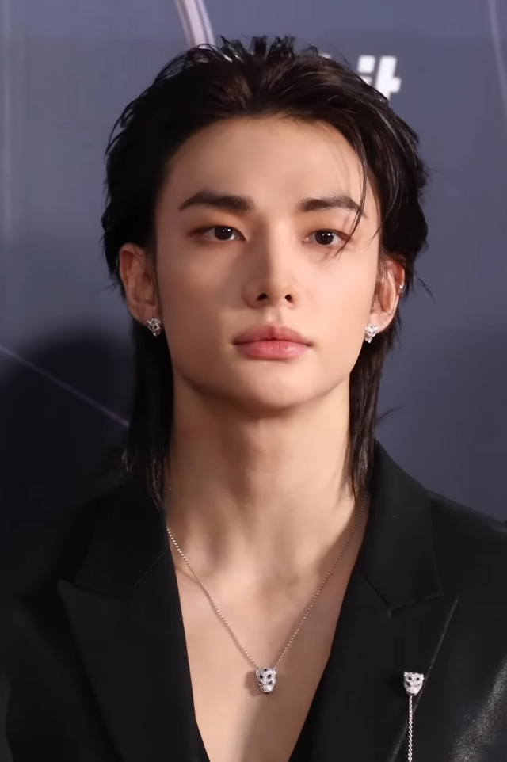

Name: Hwang Hyun-jin
Birthday: 20 March 2000
Age: 26
MBTI: ESTP or INFP
SKZOO: Jiniret
Roles in stray kids: Main Dancer, rapper, and visual.
Rachas : DanceRacha, PaboRacha,and Red lights-Racha.
Story: Hyunjin was born in Seoul, South Korea, and is the group's "Visual" and a key member of DanceRacha. He joined JYPE in 2015 He is widely recognized as one of K-pop’s most expressive performers, known for his fluid, dramatic dancing style and captivating stage presence. Beyond his dancing, he is a talented rapper and vocalist who has become increasingly involved in songwriting and composing. Outside of music, Hyunjin is a passionate artist who spends his free time painting and drawing. Despite his "ice prince" visuals, he is incredibly soft-hearted, known for his dramatic reactions and his deep love for his dog, Kkami.
Facts: Hyunjin has a pet dog named Kkami, Hyunjin also loved painting and drawing, he is also known as the "Drama King" of Stray Kids. He briefly lived in Las Vegas, Nevada, during kindergarten.